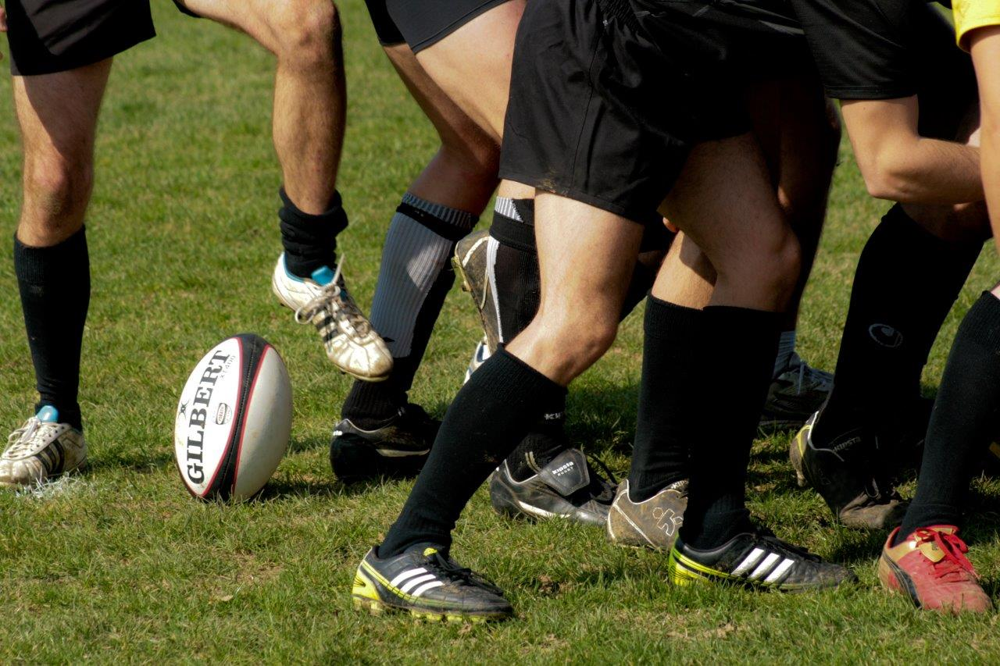
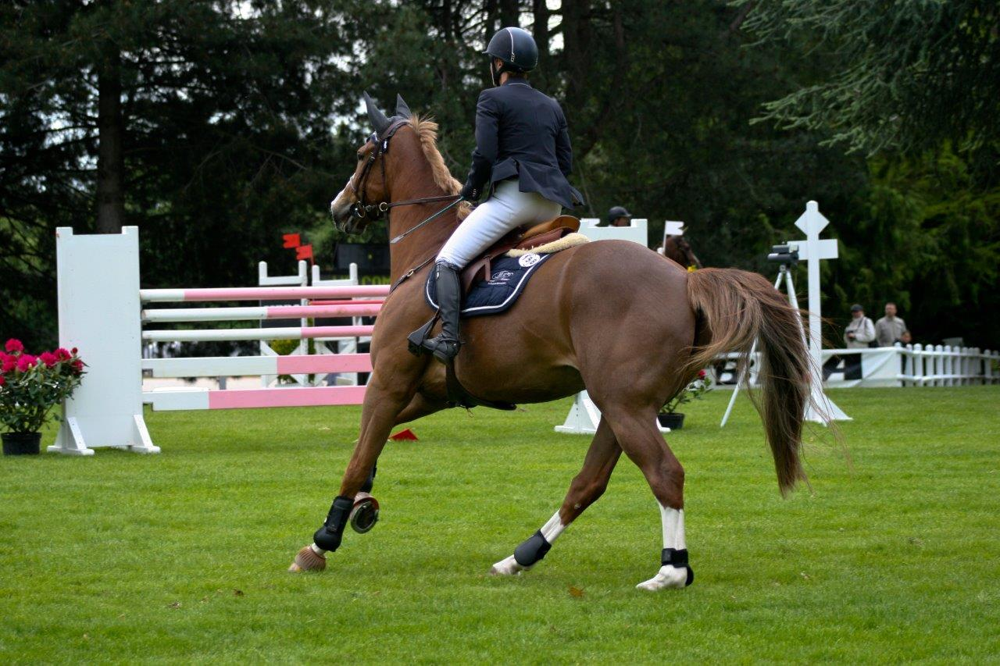
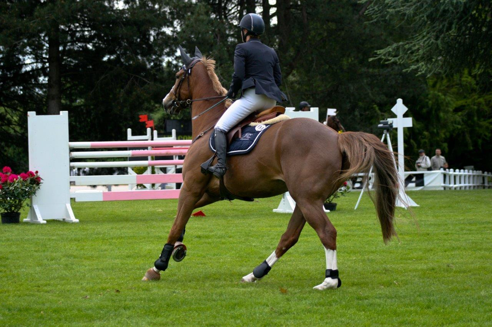

I am a 2nd year PhD student in bioinformatics, working on clonal evolution in neuroblastoma, under the supervision of Olivier DELATTRE and Gudrun SCHLEIERMACHER at U830 and Valentina BOEVA at U900.
I graduated from the Ecole Polytechnique in 2014, and obtained a master's degree in Molecular and Cellular Biotherapies from Université Paris Descartes the same year.
I have always enjoyed interdisciplinary work, which lead me to different topics such as quality control for Simone PERELE , scuba-diving gear handling ,
However, I did not forget all of my previous work, and put it to good use, by teaching molecular and cellular biology at Université Paris Sud (1st year of Bachelor degree).
My work has focused so far on reconstructing clonal populations from whole genome sequencing data. This has lead me to develop QuantumClone, which aims to reconstruct clonal populations by statistical inference. I have also been interested in how to select the best variants to do the clustering.
R packages :
I have presented QuantumClone and its applications at ISMB/ECCB 2015 in Dublin: an oral presentation at HitSeq, and a poster both at HitSeq and ISMB
You can find here some materials for teaching, in French. A translation can be made if asked.
Cette section est en français, et est principalement destinée aux élèves de L1BCST de l'Université Paris Sud. Le but étant de donner ici des compléments de cours, ou de répondre à des questions de manière plus complète que lors des TP/TDs
Exemples de compte rendu
ShinyApp
Calculer un temps de génération
Le compte shinyapps ne supporte que 25h d'utilisation par mois, donc cela se fait sur la base du "premier arrivé, premier servi". Si d'aventure d'autres solutions m'étaient proposées, je suis prêt à fournir gracieusement le code R permettant de générer la page.
As a a good approximation of my resume can be found on my LinkedIn profile, I mainly use this website to show non-academic skills such as teaching material, basic html/css programming, and advertise the latest releases of R packages. I currently am interested in data analysis, and I mainly deal with genomic data - i.e. looking for the hypothetic needle in a thousand haystack. I switched from the wet lab to full-time computer programming between my master's degree and my PhD, but do not plan on going back to the bench except for giving classes.
I have been doing some photography for student associations at Ecole Polytechnique and still practice it when I have time. Below are some examples of what I did.

 
